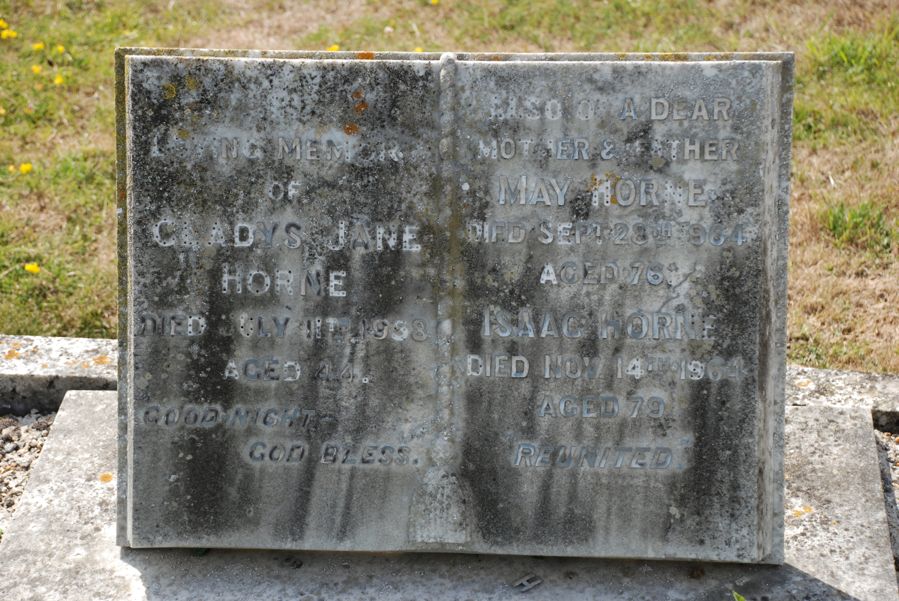
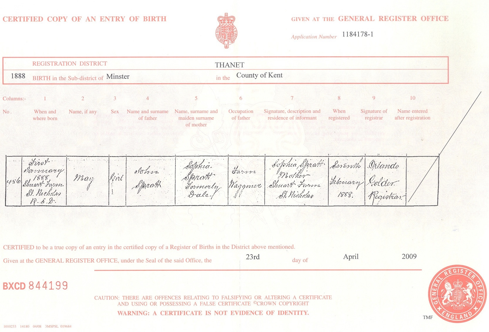
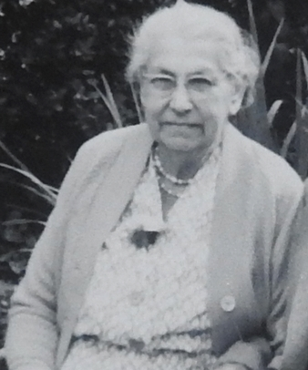
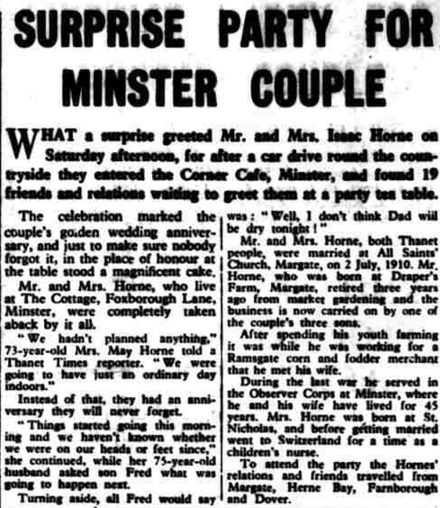
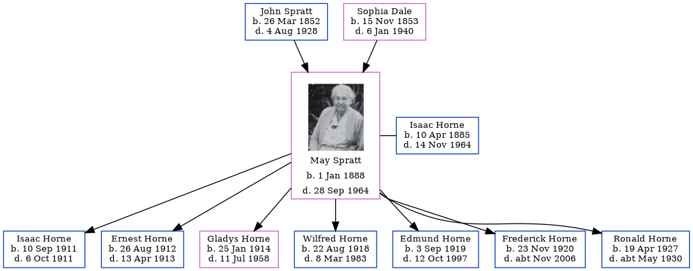

May Horne (née Spratt) 1888 - 1964
[ Home ] | [ Calendar ] | [ Surnames Index ] | [ Errors ] | [ Family History ]The child of John Spratt (an agricultural labourer) and Sophia Dale, May Spratt, the grandmother of Nigel Horne, was born in St Nicholas-at-Wade, Kent, England on 1 Jan 18881,2,3,4,5,6,7, was baptised there on 29 Feb 1888 and married Isaac Horne (a hay trusser & thatcher heavy worker market gardener with whom she had 7 children: Isaac George, Ernest John, Gladys Jane, Wilfred George, Edmund Frank, Frederick Norman and Ronald Leonard) at All Saints Church, Westbrook, Margate, Kent, England on 2 Jul 19109 (All Saints Church, Westbrook).
During her life, she was living at Shuart Cottage, Podden Street in St Nicholas-at-Wade on 5 Apr 189112; at 2 Nash Court Cottage, Nash Road in Margate on 31 Mar 190111; at 4 Newington Terrace, St Lawrence, Thanet, Kent on 2 Apr 191113; at Pansy Cottage, Way, Minster, Thanet, Kent on 19 Jun 19214; at Way Cottages, Minster, Thanet, Kent on 28 Aug 1931 and on 29 Sept 19395 (when she was living with her); on The Cottage, Foxborough Lane, Minster, Thanet, Kent in 1960; and at Lachine, 22 High Street, Minster, Thanet, Kent in 1964. Before 1910 she was working at Childrens Nurse in Switzerland.
She died on 28 Sept 1964 in Minster, Thanet, Kent8 and was buried there at Minster Cemetery, Tothill St in 196410.
Parents
- John was born on 26 Mar 1852
- Sophia was born on 15 Nov 1853
Children
- Isaac George was born on 10 Sept 1911
- Ernest John was born on 26 Aug 1912
- Gladys Jane was born on 25 Jan 1914
- Wilfred George was born on 22 Aug 1918
- Edmund Frank was born on 3 Sept 1919
- Frederick Norman was born on 23 Nov 1920
- Ronald Leonard was born on 19 Apr 1927
Citations
- 1891 England Census Online publication - Provo, UT, USA: The Generations Network, Inc., 2005.Original data - Census Returns of England and Wales, 1891. Kew, Surrey, England: The National Archives of the UK (TNA): Public Record Office (PRO), 1891. Data imaged from The National
- 1901 England Census Online publication - Provo, UT, USA: The Generations Network, Inc., 2005.Original data - Census Returns of England and Wales, 1901. Kew, Surrey, England: The National Archives of the UK (TNA): Public Record Office (PRO), 1901. Data imaged from the National
- 1911 England Census Online publication - Provo, UT, USA: Ancestry.com Operations, Inc., 2011.Original data - Census Returns of England and Wales, 1911. Kew, Surrey, England: The National Archives of the UK (TNA), 1911. Data imaged from the National Archives, London, England.
- 1921 Census Of England & Wales - Findmypast (was age 33 and the wife of the head of the household)
- 1939 Register - Findmypast (was the wife of the head of the household)
- England & Wales, FreeBMD Birth Index, 1837-1915 Online publication - Provo, UT, USA: The Generations Network, Inc., 2006.Original data - General Register Office. England and Wales Civil Registration Indexes. London, England: General Register Office. © Crown copyright. Published by permission of the Cont
- Public Member Trees Online publication - Provo, UT, USA: The Generations Network, Inc., 2006.Original data - Family trees submitted by Ancestry members.Original data: Family trees submitted by Ancestry members.
- England & Wales, Death Index: 1984-2005 Online publication - Provo, UT, USA: The Generations Network, Inc., 2007.Original data - General Register Office. England and Wales Civil Registration Indexes. London, England: General Register Office. © Crown copyright. Published by permission of the Cont
- Other
- Billiongraves
- 1901 England, Wales & Scotland Census - Findmypast (was age 12 and the daughter of the head of the household)
- 1891 England, Wales & Scotland Census - Findmypast (was age 3 and the daughter of the head of the household)
- 1911 Census for England & Wales - Findmypast (was age 23 and the wife of the head of the household)
Media
isaac horne - may spratt - gladys horne - headstone

Isaac Horne - May Spratt - marriage certificate

May Spratt

May Spratt - birth certificate

May Spratt - birth certificate
May Spratt
May Spratt - 2

May Spratt
Thanet Times July 5, 1960

Thanet Times July 5, 1960
1939 Register Transcription - TNA-R39-1820-1820H-015-06
1939 Register Transcription - TNA-R39-1820-1820H-015-08
England & Wales marriages 1837-2008 - BMD/M/1910/3/AZ/000903/096
England & Wales deaths 1837-2007 - BMD/D/1964/3/AZ/000352/184
England & Wales births 1837-2006 - BMD/B/1888/1/AZ/000536/016
Canterbury Baptisms - GBPRS/CANT/B/96802312
1891 England, Wales & Scotland Census - GBC/1891/0005855069
1939 Register Transcription - TNA-R39-1820-1820H-015-07
England Births & Baptisms 1538-1975 - R_884948143
1921 Census of England & Wales - GBC/1921/RG15/04430/0061/02
Family Tree
Map
Generated by ged2site. Last updated on Jul 3, 2024
Known Issues
Residence record for 1964 contains no citation
Residence record for 1960 contains no citation
Residence record for 28 Aug 1931 contains no citation